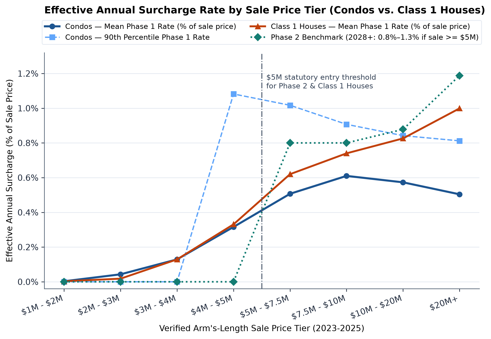
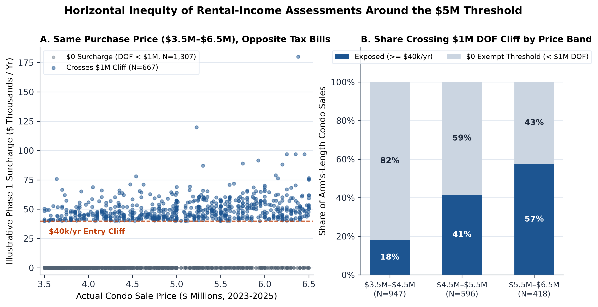

The question
New York Tax Law §§ 1350–1353 introduces an annual non-primary residence surcharge taking effect January 1, 2027. Rather than building a separate valuation roll right away, Phase 1 (tax years beginning July 2026 through June 2028) relies on existing Department of Finance tentative market values (finmkttot). Those numbers mean completely different things across tax classes.
One- to three-family Class 1 houses are valued close to market price and taxed at 0.80% to 1.30% above $5,000,000. Class 2 condominiums are valued under Real Property Tax Law § 581 using comparable rental buildings and taxed on whole parcel value at 4.00% to 6.50% once finmkttot reaches $1,000,000—triggering an immediate $40,000 surcharge cliff at the threshold. Linking the full FY2026-27 assessment roll to ACRIS-verified deed transfers, this paper asks how statutory rental-income proxies distort tax incidence across prices, across neighboring buildings, and ahead of Phase-2 sales-based assessments.
Main findings
- 0.2344 vs. 1.0549median assessment-to-sale ratio (
finmkttot / price) for 26,531 clean condo sales (a 4.265x price-to-DOF ratio) versus 36,352 house sales in 2023–2025 - 0.696% → 0.440%median statutory condominium effective surcharge rate as prices rise from $5M–$7.5M down to $20M+, inverting progressivity above $5 million
- −0.1419repeat-sales 2SLS assessment-ratio elasticity against log price (
N = 10,232; leave-one-out peer IV =−0.1428), showing 82% of bivariate regressivity is structural - 77.20%of condominium assessment-ratio variance absorbed by building (condo declaration) fixed effects, tied to New York's comparable-rental RPTL § 581 rule
- 61.5% / 38.5%split of $4M–$6M condominiums between $0 statutory liability (below the $1M DOF notch) and $40,000+ (above it)
- 31.30%of $5M+ entries among 35,977 raw condominium sales that fail arm's-length filters (entity, family, distressed, or bulk transfers) before Phase-2 rollout


finmkttot threshold: 61.50% sit below the notch ($0 statutory surcharge) while 38.50% cross it and owe $40,000+.Why it matters
- Using Class 2 rental-income proxies for an asset-value surcharge reverses vertical equity among high-end condominiums: ultra-luxury towers often carry lower assessment-to-price ratios than upper-middle condos.
- Because Tax Law § 1353 taxes a parcel's entire
finmkttotonce it crosses $1,000,000 rather than applying a marginal bracket above $1,000,000, building-specific RPTL § 581 variance creates sharp $40,000+ disparities between units selling for the same price on the same block. - Ahead of Phase 2 (July 2028), when assessments shift to sales-based valuation rules, cleaning raw sales files matters directly: nearly a third (31.30%) of nominal $5M+ entries fail standard arm's-length deed screens.
What the results can tell us
Department of Finance assessment rolls and ACRIS transfer deeds do not record whether an owner claims primary residency or qualifies for an exclusion under Tax Law §§ 1350–1353. Accordingly, all tax liabilities and effective rates reported in this paper represent statutory conditional schedules evaluated at each parcel's tentative FY2026-27 assessment (assuming non-primary status), not aggregate citywide revenue forecasts or realized household incidence.
Instrumental-variables estimates address measurement attenuation in recorded sale prices by instrumenting sale price with prior/subsequent repeat-sales pairs (N = 10,232) and leave-one-out peer building sales. Version 1.0 publishes the full 20-page working paper PDF alongside deterministic Python scripts reproducing all 9 tables and 4 figures from the linked FY2026-27 roll and ACRIS dataset 1.2.0.
Cite this paper
BibTeX citation
@misc{loschi2026rentalproxies,
author = {Loschi, Pablo},
title = {Rental Proxies on a Million-Dollar Notch: Valuation Distortion,
Horizontal Inequity, and Phase-2 Readiness in New York City's
Pied-{\`a}-Terre Tax},
year = {2026},
howpublished = {Working paper, Zenodo},
version = {1.0},
doi = {10.5281/zenodo.24484929},
url = {https://nychousingdata.com/papers/rental-proxies-on-a-million-dollar-notch/Rental_Proxies_on_a_Million_Dollar_Notch_v1_0.pdf}
}